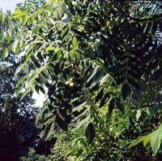

くるみ（胡桃）の生産量
いちばん多くとれる都道府県
くるみが日本でいちばん多くとれるのは青森県です。38 tで、全国（61 t）の62%を占めます。

| 順位 | 都道府県 | 収穫量 | 全国に占める割合 |
|---|---|---|---|
| 1位 | 青森県 | 38 t | 62% |
| 2位 | 長野県 | 21 t | 34% |
| 3位 | 愛媛県 | 1 t | 1.6% |
この数字について
- 分類：クルミ科
- 全国の収穫量：61 t
- この数字が表すもの：収穫量（畑や田でとれた重さ）
- 調査：特産果樹生産動態等調査 令和5年産
- この品目は統計に上位3産地しか載っていません。4位以下は国が公表していないため分かりません。